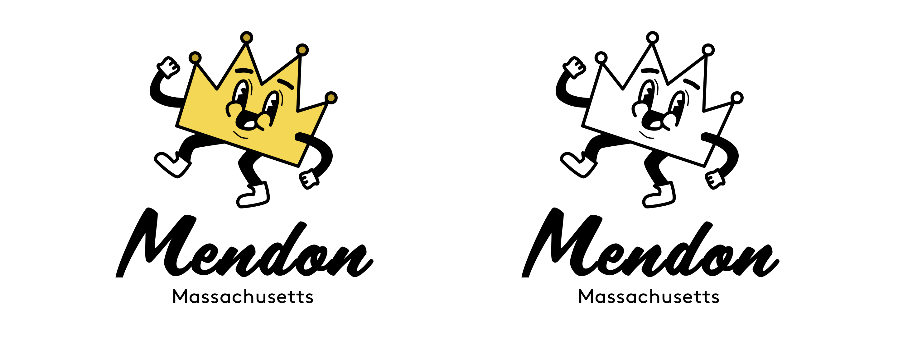
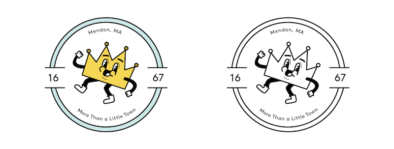
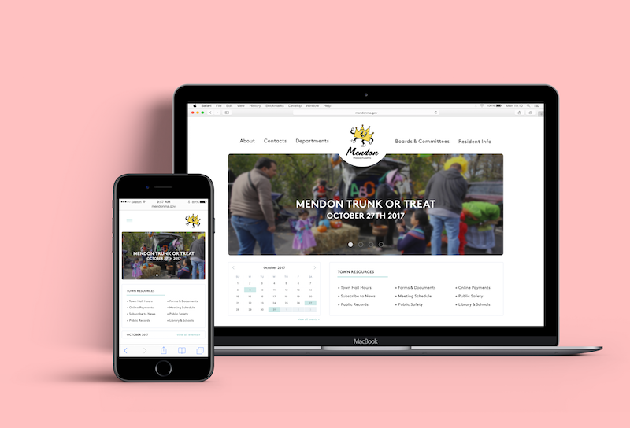
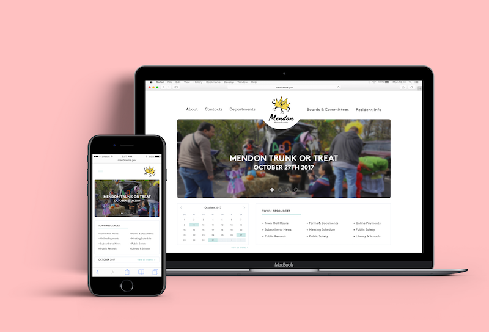

Mendon, Massachusetts
rebranding | 2017
With a small population of about 6,317 people, Mendon tends to be referred to as the little town. It’s biggest characteristic to most who do not know it so well is its unusually small size.
If you have lived in the town, you will know that it is so much more than its lack of space and people. You would understand that this little town is more than just a little town, and it has got a whole lot to offer. It is a town with an intriguing history and a charming atmosphere. It has many unexpected aspects, like stories of King Phillip’s War in 1675, to exciting gems like the Mendon Twin Drive-In.
This rebrand aims to bright out the little known quirks about Mendon.
primary logomark
In comparison to the town’s current logo, this new emblem is more successful in telling the story of where Mendon is currently. It feels more friendly and inviting. Also, it starts to introduce outsiders to the 1950s aesthetic throughout the town.
The crown has an unexpected connection to Mendon. One idea is an ode to King Phillip’s War being a big part of its history. It resonates with the neon crown on top of the town center’s country store. That store is the most popular of its kind in Mendon. The style of the crown illustration derives from 1950s cartoons, especially the infamous “Let’s all go to the lobby!” song played at the drive-in.
secondary logomark
The circular shape is simple, but can mean a lot to someone familiar with the town. The people of Mendon are head over heels in love with classic cars. It is extremely common to see a massive amount of vintage hot rods on the road on any given Sunday afternoon. To play on the love for old cars, the circular shape hints towards the typical car logo form.

 
